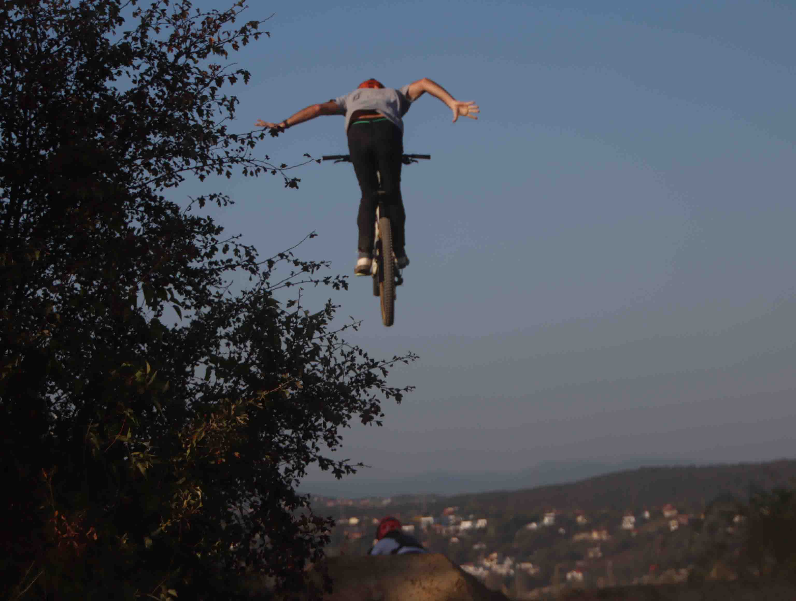
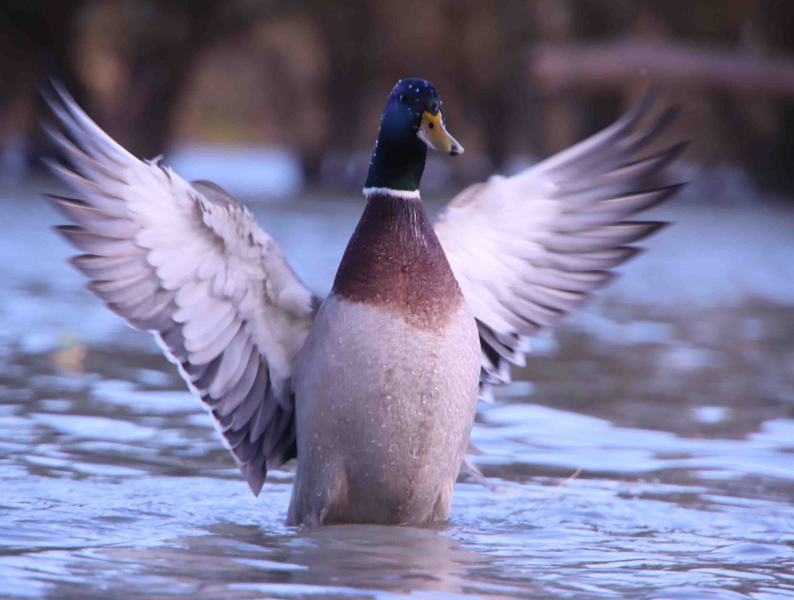

Képek készítését több, mint 2 éve kezdtük, azóta szenvedélyünké vált a fotózás. Először csak a Pilisben töltött biciklitúrák alatt készítettünk képeket, később kiszélesedett érdeklődésünk. Először városi túrákat szerveztünk és kipróbáltuk a fotózás más szakágait is. A Pilis közelsége miatt volt alkalmunk kipróbálni kevés utazással a csillagfotózást. A fotózásnak eme szakága annyira kedvessé vált számunkra, hogy többször is szálltunk autóba és utaztunk akár több, mint 100 km-t is megfelelő helyszín meglátogatásához. Természetesen minden utazás kihagyhatatlan eleme lett a fotónap, amikor egy egész napot azzal töltünk el, hogy sétálgatunk, felfedezünk és próbáljuk megörökíteni környezetünket.
Bemutatkozás
Mintaképek
| Astro fényképezés | Sport fényképezés | Természet fényképezés | Utcai fényképezés |
|---|---|---|---|
 |
 |  |  |